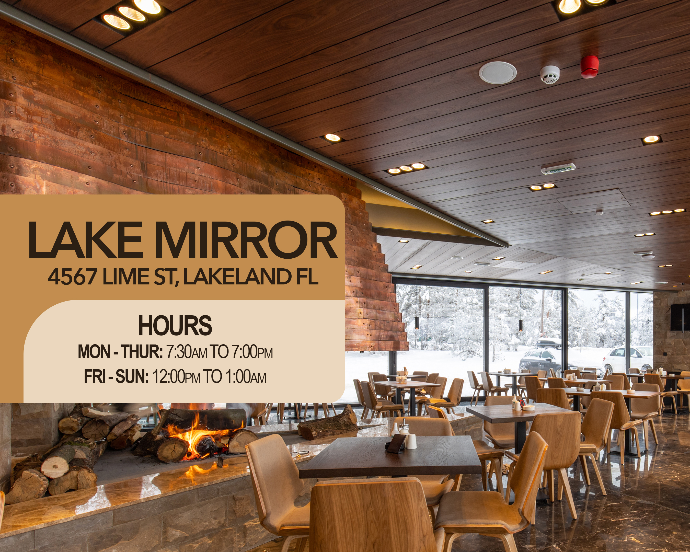
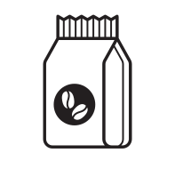

Visit Munn Park Roasters, where every cup of coffee is a warm invitation to savor artisanal brews and connect with our vibrant community.
Munn Park

Lake Mirror


Fairtrade Coffee
Organic Ingredients

Locally Owned

ABOUT US
Welcome to Munn Park Roasters, nestled in the heart of downtown Lakeland ourrich aroma of freshly roasted coffee beans invites you to experience more than just a cup of coffee. Here, our focus is on fostering a sense of community. Stop by and enjoy the perfect blend of warmth, camaraderie, and exceptional coffee.
Coffee

Pastries

Soups

Sandwiches

Testimonials